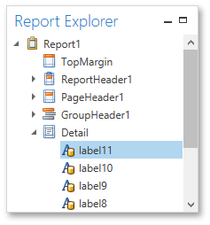

Report Explorer
The Report Explorer reflects a report's structure in a tree-like form providing easy access to report elements. Additionally, the Report Explorer contains the Components node, which displays non-visual report components such as data objects created when binding a report to a data source. You can also use the Report Explorer to manage styles and formatting rules available for a report.
To access and edit settings of a report element or component, select it in the Report Explorer and switch to the Properties Panel. You can also right-click elements and components to invoke their context menu.

In the Report Explorer, data-aware controls are marked with a special database icon.

You can manage styles and formatting rules using commands available in context menus. To invoke a context menu, right-click the corresponding root node or its sub-node.